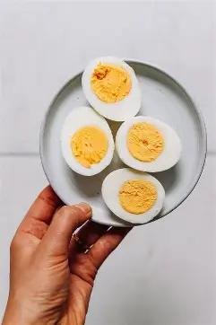

Hard-Boiled Eggs in the Oven

Description
Ingredients
Directions
- Preheat the oven to 350 degrees F (175 degrees C).
- Carefully place an egg into each cup of a standard muffin tin.
- Bake in the preheated oven for 30 minutes./li>
- Transfer baked eggs to a large bowl filled with ice water. Let sit until cooled completely, about 10 minutes.
Home